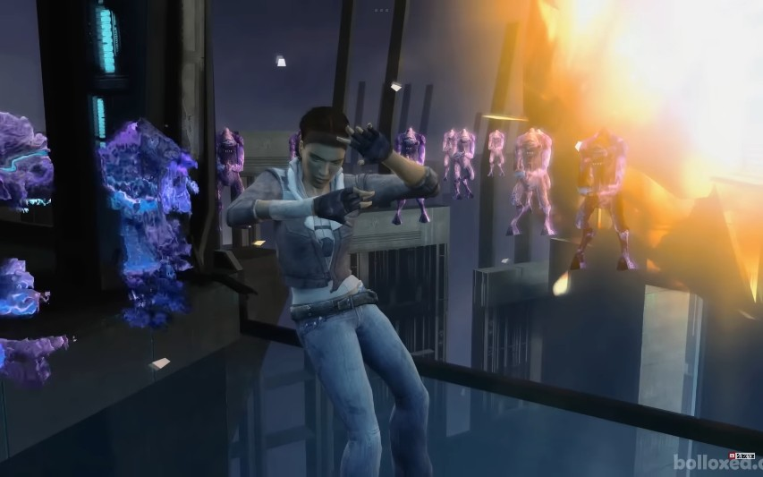
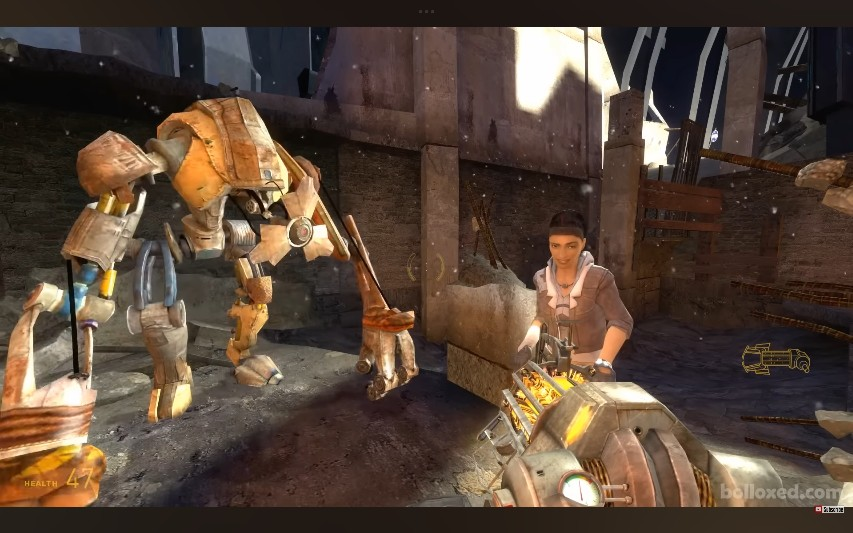
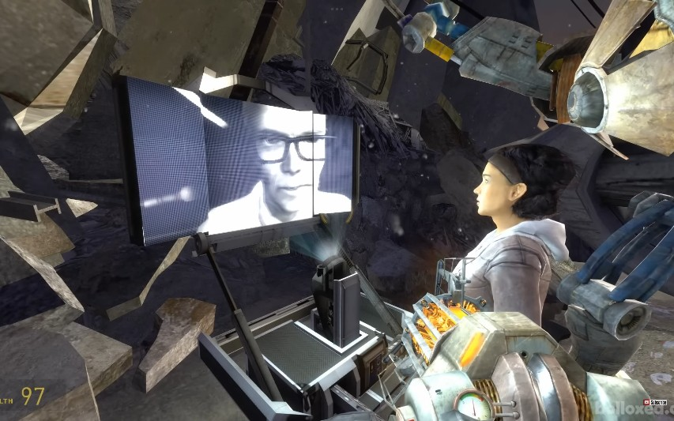
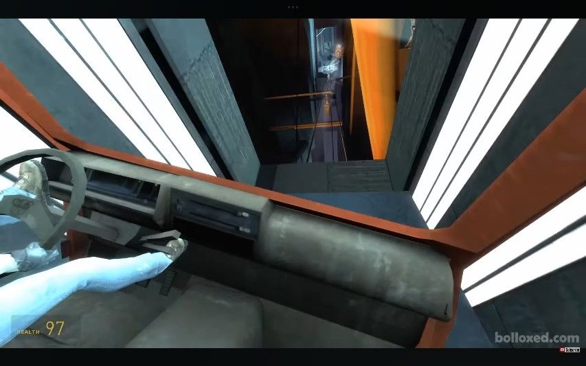
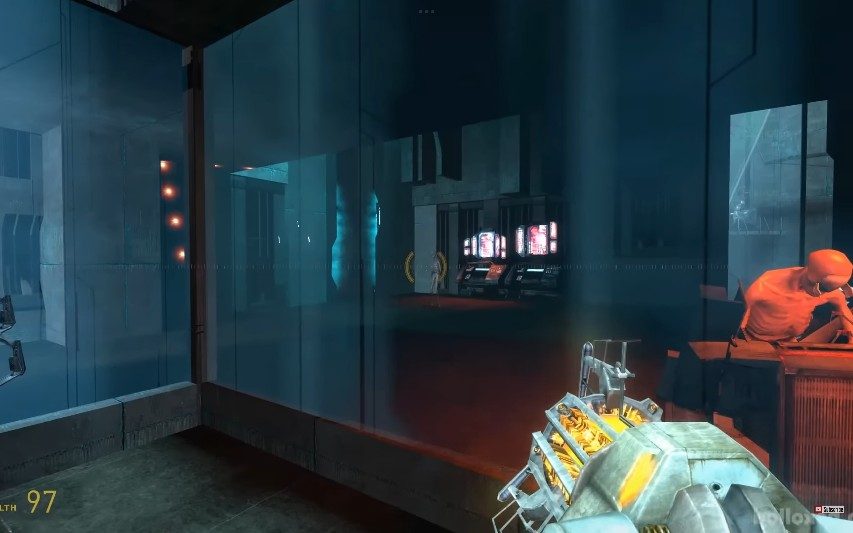
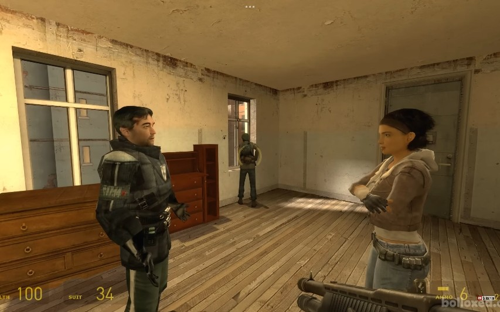
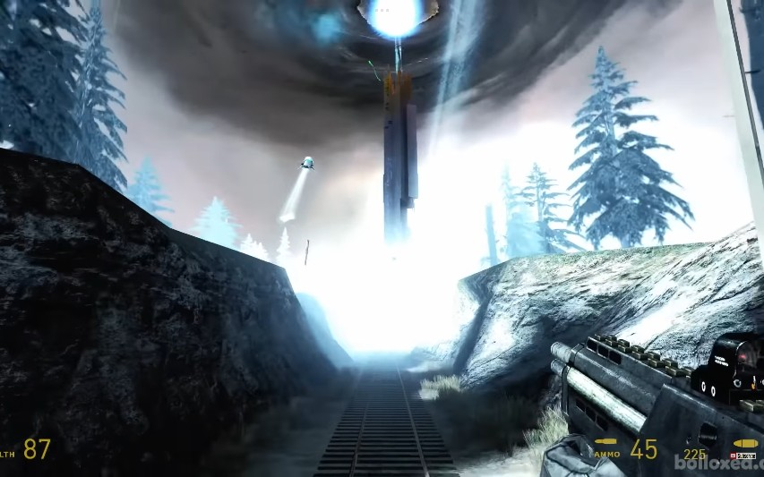

ผลพวงจากการระเบิดของเตาปฏิกรณ์ Dark Energy กอร์ดอนและอเล็กซ์ได้รับการช่วยเหลือจากเหล่า Vortigaunts พวกเขาต้องหาทางถ่วงเวลาไม่ให้ Citadel ระเบิด เพื่ออพยพผู้คนออกจาก City 17 ให้ทันเวลา

สืบเนื่องจากตอนจบของ Half-Life 2 ในเสี้ยววินาทีที่เตาปฏิกรณ์บนยอดหอคอย Citadel กำลังจะระเบิดและ G-Man ปรากฏตัวขึ้น เหล่า Vortigaunts ได้ใช้พลังของพวกเขาร่วมกันแทรกแซงมิติเวลา ดึงตัวอเล็กซ์ แวนซ์ (Alyx Vance) ให้พ้นจากอันตราย และปลดปล่อยกอร์ดอน ฟรีแมน ออกจากการควบคุมของ G-Man ได้สำเร็จ

กอร์ดอนฟื้นขึ้นมาใต้ซากปรักหักพังบริเวณฐานของหอคอย Citadel หุ่นยนต์สัตว์เลี้ยงแสนรู้ "ด็อก" (Dog) ได้ดึงตัวกอร์ดอนออกมาจากซากหินและให้เขากลับมาพบกับอเล็กซ์อีกครั้ง ทั้งสองคนรอดชีวิตมาได้อย่างปาฏิหาริย์

อเล็กซ์และกอร์ดอนสามารถติดต่อกับ ดร.ไคลเนอร์ (Dr. Kleiner) และ อีไล แวนซ์ (Eli Vance) ผ่านหน้าจอสื่อสารที่พังยับเยิน ดร.ไคลเนอร์ แจ้งข่าวร้ายว่าแกนกลางของ Citadel กำลังเข้าสู่สภาวะหลอมละลาย (Meltdown) หากมันระเบิด City 17 ทั้งเมืองจะราบเป็นหน้ากลอง ทางรอดเดียวคือพวกเขาต้อง "กลับเข้าไป" ใน Citadel เพื่อถ่วงเวลาแกนกลางเอาไว้

เนื่องจากทางเข้าปกติถูกทำลายหมด ด็อกจึงคิดแผนสุดระห่ำ โดยให้กอร์ดอนและอเล็กซ์เข้าไปนั่งในรถตู้ของกองกำลัง Combine ที่พังแล้ว จากนั้นด็อกก็ใช้พละกำลังมหาศาลโยนรถตู้ข้ามเหวลึก ทะลุช่องโหว่พุ่งตรงกลับเข้าไปในหอคอย Citadel

เมื่อกลับเข้ามาด้านใน กอร์ดอนและอเล็กซ์ต้องบุกฝ่าเข้าไปยังห้องควบคุมแกนกลาง ระหว่างทางพวกเขาได้เห็นความโหดร้ายของ Combine อย่างพวก "Stalkers" (มนุษย์ที่ถูกดัดแปลงอย่างทารุณให้กลายเป็นทาสรับใช้) กอร์ดอนต้องใช้ Gravity Gun แก้ปริศนาและเปิดระบบควบคุมเพื่อชะลอการระเบิดของแกนกลาง ซื้อเวลาให้ประชาชนหนีรอด

หลังจากถ่วงเวลาแกนกลางได้สำเร็จ ทั้งคู่หนีลงมาใต้ดิน ฝ่าดงซอมบี้และมดนรก (Antlions) จนขึ้นมาถึงพื้นผิวเมือง City 17 ที่กำลังลุกเป็นไฟ ที่นี่พวกเขาได้พบกับ บาร์นีย์ คาลฮูน (Barney Calhoun) สหายเก่าที่กำลังรวบรวมกลุ่มต่อต้านและประชาชนเพื่อเตรียมอพยพไปยังสถานีรถไฟ

กอร์ดอนและอเล็กซ์ทำหน้าที่คุ้มกันประชาชนขึ้นรถไฟขบวนสุดท้าย หลังจากปะทะกับหุ่นรบ Strider อย่างดุเดือด ทั้งสองก็กระโดดขึ้นรถไฟได้สำเร็จ ในขณะที่รถไฟกำลังวิ่งออกจากเมือง หอคอย Citadel ก็ทนรับความร้อนไม่ไหวและระเบิดออกอย่างรุนแรง คลื่นกระแทกมหาศาลพุ่งเข้าซัดขบวนรถไฟของพวกเขา ปูทางไปสู่เหตุการณ์ใน Episode Two...